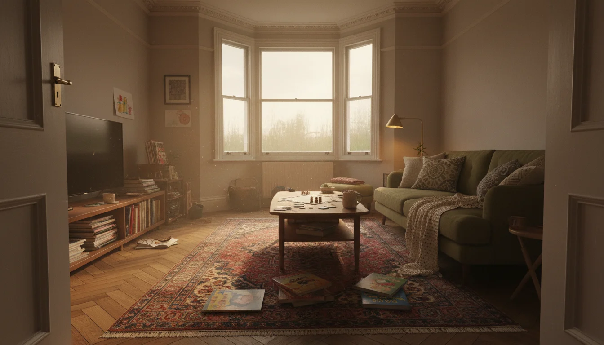

לונדון עם ילדים - מה שמדריכי הטיולים לא מספרים לכם
למה לונדון עיר מעולה לילדים (ואיך ישראלים מפספסים את זה)
רוב הישראלים שמגיעים ללונדון עם ילדים עושים את אותה טעות. הם מנסים לדחוס את הלונדון איי, ביג בן, ארמון בקינגהאם ושלושה מוזיאונים לתוך חמישה ימים. הילדים עייפים, ההורים עצבניים, וכולם חוזרים הביתה עם תחושה שלונדון זה קשה עם ילדים.
אבל לונדון עם ילדים זה לא קשה. זה פשוט דורש גישה אחרת.
כשיש לכם דירה משלכם בלונדון, חופשה משפחתית בלונדון הופכת למשהו אחר לגמרי. אתם לא תיירים שרצים בין אטרקציות. אתם מתעוררים בבוקר, יורדים לפארק, הולכים למוזיאון אחד אחרי הצהריים, ובערב מכינים ארוחה במטבח שלכם. יום שלישי רגיל, לא חופשה מרוכזת.
וזה ההבדל הגדול. שבוע חופשה בלונדון עם ילדים - לחוץ. שלושה שבועות באוגוסט בדירה שלכם - חיים. הילדים מכירים את הפארק, את החנות בפינה, את הגלידרייה ליד הבית. הם מתחילים לדבר אנגלית בלי שאתם שמים לב. זה סוג אחר לגמרי של חוויה.
ואוגוסט בלונדון? מזג אוויר נוח, 20-25 מעלות, ימים ארוכים עד תשע בערב. לונדון קצת ריקה יותר כי הבריטים נסעו לחופש. הפארקים ירוקים, האור יפה, והעיר שלכם.
אחרי יותר משני עשורים בלונדון עם ילדים, אני יכולה להגיד לכם - זו אחת הערים הכי טובות בעולם למשפחות. אבל רק אם מפסיקים לחשוב עליה כיעד תיירותי ומתחילים לחיות בה.
פארקים ומרחבים ירוקים - הדבר שלונדון עושה הכי טוב
ישראלים שמגיעים ללונדון בפעם הראשונה תמיד מופתעים מכמות הירוק. זה לא רק Hyde Park. יש כאן מאות פארקים, ובניגוד לישראל - הדשא ירוק כל השנה והילדים יכולים לרוץ עליו בלי שמישהו צועק עליהם. אפשר לשבת על הדשא, לפרוש שמיכה, לאכול סנדוויץ'. זה נורמלי פה. בישראל, דשא בפארק ציבורי הוא בדרך כלל שלט "אסור לדרוך".
Hampstead Heath - זה הפארק שלנו, של מי שגר בצפון לונדון. שטח ענקי, בריכת שחייה בחוץ, ומגרש משחקים ב- Parliament Hill שעבר שיפוץ ונראה מעולה. יש שם גם בריכת שכשוך לימים חמים. ו- Golders Hill Park שנמצא בקצה - יש שם גן חיות קטן, בחינם, עם צביים ולמורים. הילדים אוהבים את זה.
Holland Park - בשכונה של Notting Hill. שני מגרשי משחקים - אחד לקטנים ואחד הרפתקני לגדולים. יש שם טווסים שמסתובבים חופשי וגנים יפניים. שילוב מוזר ומושלם.
Primrose Hill - הנוף הכי יפה של לונדון מלמעלה, ולמטה מגרש משחקים מצוין עם פירמידת טיפוס ומגרש חול. הרבה הורים מהשכונה באים לכאן בכל בוקר.
Diana Memorial Playground ב- Kensington Gardens - ספינת פיראטים מעץ ענקית שהילדים יכולים לטפס עליה. מתאים במיוחד לגילאי 3-8. תמיד תור קצר בכניסה, אבל שווה. ב- Kensington Gardens יש גם את הפסל של פיטר פן ואת הגנים השקועים - יפה להליכה גם בלי ילדים.
Regent's Park - אגם שאפשר לשוט בו בסירות, ופארק הזואולוגי ממש בצד. יום שלם בקלות. יש גם מגרשי משחקים מצוינים ברחבי הפארק ומדשאות ענקיות שמושלמות לפיקניק.
St James's Park - הפארק הכי קרוב לארמון בקינגהאם, ויש שם את השנינוקים - הפליקנים שמאכילים אותם כל יום ב-14:30. ילדים אוהבים את זה. גם הברווזים והאווזים על האגם הם חוויה לקטנים.
הפארקים האלה הם לא אטרקציות תיירותיות. הם החיים היומיומיים של מי שגר כאן. כשאתם בוחרים איפה לקנות דירה, הקרבה לפארק טוב היא אחד הדברים הכי חשובים למשפחה.
מוזיאונים בחינם - כן, באמת בחינם
הנה משהו שישראלים לא מאמינים עד שהם רואים את זה בעצמם: המוזיאונים הכי טובים בלונדון הם בחינם. לא בחינם עם כוכבית, לא "תרומה מומלצת" שמרגישים חייבים לשלם. בחינם. נכנסים, נהנים, יוצאים. הבריטים מאמינים שתרבות צריכה להיות נגישה לכולם, וזה אחד הדברים שלמדתי להעריך מאוד אחרי שנים כאן.
Natural History Museum - דינוזאורים, יהלומים, לוויתן כחול ענקי תלוי מהתקרה. הילדים מאבדים את הראש פה. יש גם סימולטור רעידת אדמה. שלוש עד ארבע שעות ביקור, בקלות.
Science Museum - The Garden בקומת המרתף הוא המקום הכי טוב בלונדון לפעוטות. משחקי מים אינטראקטיביים שהילדים פשוט לא רוצים לעזוב. הגלריה החדשה של החלל פתחה ב-2025. ל- Wonderlab צריך כרטיס נפרד, אבל שווה כל שקל.
Young V&A - מוזיאון שתוכנן מאפס לילדים. שלוש גלריות - Imagine, Play, Design. אינטראקטיבי, חווייתי, מבריק. ילדים מגיל שנתיים ועד עשר נהנים פה.
הכניסה חינם אבל צריך להזמין כרטיסים מראש באינטרנט, במיוחד ל- Science Museum. תעשו את זה. ביום שבת בחופשה בלי הזמנה מראש, לא תיכנסו.
Natural History Museum ו- Science Museum נמצאים ב- South Kensington, ויש מנהרה מהרכבת התחתית שמובילה ישירות אליהם. Young V&A נמצא ב- Bethnal Green - רחוק יותר, אבל שווה את הנסיעה. אפשר לעשות שניים ביום אחד אם מתחילים מוקדם - אחד בבוקר, הפסקת צהריים בבית הקפה של המוזיאון, ואחד אחרי הצהריים.
טקטיקה שעובדת: תלכו תמיד ראשון לגלריה הכי רחוקה מהכניסה. כולם מתחילים מהכניסה, אז הגלריות האחוריות ריקות בבוקר ומתמלאות אחר הצהריים. בדינוזאורים ב- Natural History Museum - תתחילו מקומה שנייה ותרדו.
פעילויות לילדים בלונדון - לפי גיל
לא כל דבר מתאים לכל גיל. הנה מה שבאמת עובד:
פעוטות (0-3): soft play - זה דבר בריטי שאין לו מקבילה טובה בישראל. מרחבי משחק סגורים, מרופדים, עם מגלשות ובריכות כדורים. כל שכונה יש לפחות אחד, ובימי גשם הם הצלה. גם The Garden בקומת המרתף של Science Museum מושלם לגיל הזה - משחקי מים שהפעוטות לא רוצים לעזוב.
חוות עירוניות קטנות פזורות ברחבי לונדון - Mudchute Farm ב- Isle of Dogs, Kentish Town City Farm - וכולן בחינם. שעת סיפור בספריות המקומיות, גם בחינם, ובאנגלית שהילדים קולטים מהר להפתיע.
גיל בית ספר (4-10): הגיל המושלם ללונדון. המוזיאונים שהזכרתי למעלה הם מושלמים - ילדים בגיל הזה מתלהבים מדינוזאורים, ממדע, ומרעידות אדמה מדומות. Harry Potter Studio Tour הוא חובה - תזמינו כרטיסים חודש מראש כי הם נגמרים.
London Zoo ב- Regent's Park שווה יום שלם - תגיעו לפתיחה ותתחילו מגלריית הגורילות. מחזות זמר ב- West End - מלך האריות ו- Matilda מתאימים לגיל הזה. ואם הילדים ספורטיביים, יש בריכות שחייה ציבוריות מצוינות כמעט בכל שכונה, ופארקי סקייטבורד ב- Hampstead Heath וב- Hyde Park.
בני נוער (11+): Camden Market הוא מגנט למתבגרים - חנויות וינטג', אוכל רחוב, ואנרגיה שונה לגמרי משאר לונדון. אמנות רחוב ב- Shoreditch, ו- Borough Market - אבל רק עם מתבגרים שאוהבים אוכל. עם ילדים בררנים זה סיוט.
מחזמר ב- West End עובד גם לבני נוער. ובכנות - לתת להם Oyster card ולשחרר אותם קצת. לונדון עיר בטוחה ובני נוער אוהבים את העצמאות. ילדים בני 13-14 יכולים לנסוע ברכבת התחתית לבד, לטייל ב- Covent Garden, לקנות משהו ב- Oxford Street. זו חוויה מעצימה בשבילם.
שכונות שעובדות למשפחות
איפה הדירה שלכם ממוקמת משנה הכל כשמגיעים עם ילדים. לא מדובר רק בכתובת יוקרתית - מדובר בחיי היומיום. כמה דקות הליכה לפארק? יש סופרמרקט בקרבת מקום? הרחוב שקט מספיק שהילדים יכולים לרוץ בחוץ?
| שכונה | יתרון עיקרי למשפחות | הערה |
|---|---|---|
| South Kensington | מוזיאונים + Hyde Park בהליכה | יותר תיירותי, פחות שכונתי |
| Hampstead | Heath + גן חיות + ירוק | מרגיש כמו כפר, קהילה ישראלית |
| Primrose Hill / Regent's Park | פארקים + גן חיות + שקט | רחובות שקטים, בתי קפה עם כסאות גבוהים |
| Notting Hill / Holland Park | פארק מעולה + שווקים + אווירה | צבעוני, הגלידריות ב- Westbourne Grove |
South Kensington - שלושת המוזיאונים הגדולים ממש כאן. גם Hyde Park בהליכה של חמש דקות. אם הילדים בגיל מוזיאונים (4-10), זו עמדת מוצא מושלמת. החיסרון - פחות שכונתי, יותר תיירותי. אם אתם מגיעים לשלושה שבועות באוגוסט, אולי תרצו משהו יותר שכונתי.
Hampstead וסביבותיה - Hampstead Heath, גן החיות של Golders Hill, מגרשי משחקים מעולים. שכונות ירוקות ושקטות. מרגיש כמו כפר, עשרים דקות מ- West End. קהילה ישראלית חזקה באזור. ילדים שמגיעים באופן קבוע מתחילים להכיר ילדים מקומיים בפארק.
Primrose Hill / Regent's Park - שילוב של פארקים, גן חיות, ושכונה שמתאימה להליכה עם ילדים. הרבה משפחות ישראליות מרגישות בבית פה. רחובות שקטים, בתי קפה עם כסאות גבוהים, וההרגשה שאתם חיים בכפר בתוך עיר.
Notting Hill / Holland Park - פארק מעולה לילדים, שווקים בסופשבוע ב- Portobello Road, ואווירה שכונתית למרות שזה מרכז לונדון. הבתים פה צבעוניים, הרחובות יפים, והילדים אוהבים את הגלידריות ב- Westbourne Grove.
לפירוט מלא על שכונות, ראו את המדריך לשכונות שישראלים קונים בהן.
מה עושים ביום גשום

בלונדון יורד גשם. הרבה. לא "הרבה" כמו שישראלים חושבים על חורף, אלא "הרבה" כמו לפחות כמה ימים בשבוע, כמעט כל השנה. אתם חייבים תוכנית לימים של גשם.
המוזיאונים הם הפתרון הברור. אבל יש גם:
- soft play - שם המשחק לימי גשם עם פעוטות
- קולנוע - אולמות מצוינים בלונדון, כולל הקרנות מיוחדות לילדים בבוקר שבת
- שווקים מקורים - Camden Lock ו- Borough Market
- ספריות - כל שכונה יש ספרייה, וכולן חינם, עם שעות סיפור ופעילויות יצירה
- תיאטרון ילדים - ברמה אחרת לגמרי ממה שמכירים בישראל. הפקות מקצועיות עם אפקטים, תלבושות, תפאורה - חוויה גם למי שלא מבין כל מילה באנגלית
והנה הדבר שלמדתי אחרי שנים - אף אחד פה לא מבטל תוכניות בגלל גשם. הילדים שלכם צריכים מגפי גומי טובים ומעיל גשם. ברגע שיש להם את זה, גשם הופך לפרט קטן ברקע. קנו מגפיים ומעילים כאן ותשאירו אותם בדירה - לא צריך לסחוב ממזוודה בכל ביקור. Clarks למגפי גומי, John Lewis למעילי גשם.
דבר שישראלים לא חושבים עליו - ימי גשם בלונדון יכולים להיות דווקא כיפיים. שוקו חם בבית קפה, סיפורים ליד האח בפאב, או פשוט יום של משחקי קופסא בדירה. ילדים שגדלים עם הסוג הזה של ימים לומדים ליהנות מהם.
אוכל עם ילדים - מה שעובד באמת
לונדון עברה מהפכה קולינרית בעשור האחרון, אבל עם ילדים צריך לדעת מה באמת עובד. לא כל מסעדה מקבלת ילדים, ולא כל מקום שמקבל ילדים מתאים לילדים.
Borough Market - מעולה עם ילדים מגיל בית ספר שמוכנים לטעום דברים. דוכני אוכל מכל העולם, ריחות, צבעים, טעימות. פחות מעולה עם פעוטות בעגלה - צפוף, הרבה אנשים, קשה לנוע. שבת בבוקר הכי טוב, לפני 11:00 כשזה עוד לא עמוס.
Sunday roast - ארוחת צהריים בריטית קלאסית שילדים ישראלים בדרך כלל אוהבים. בשר, תפוחי אדמה, ירקות צלויים, ו- Yorkshire pudding שהילדים מתלהבים ממנו. כמעט כל פאב מגיש, ורוב הפאבים מקבלים ילדים בשעות הצהריים. זה קרוב יותר לארוחת שישי ישראלית מכל דבר אחר שתמצאו פה.
פיש אנד צ'יפס - כן, זה קלישאה, אבל ילדים ישראלים אוהבים את זה. דג מטוגן ותפוחי אדמה - מה לא לאהוב. תחפשו את המקומיים של השכונה, לא את הרשתות התיירותיות.
כסאות גבוהים - ברוב המסעדות בלונדון יש כסאות גבוהים לתינוקות, ובדרך כלל הצוות ידידותי לילדים. אבל - ויש אבל - מסעדות יותר יוקרתיות לא תמיד מקבלות ילדים בערב. תבדקו מראש.
סופרמרקט - כשיש לכם מטבח בדירה, חצי מהארוחות יהיו בבית. Waitrose ו- M&S Food הם הרמה הכי טובה. Sainsbury's ו- Tesco טובים ליומיום. כולם מוכרים מוצרים שילדים ישראלים מכירים - פסטה, אורז, ירקות, פירות, חלב.
טיפים מישראלית שגידלה ילדים בלונדון
ילדים מתחת לגיל 11 נוסעים בחינם ברכבת התחתית, באוטובוסים ובטראם. פשוט עולים עם הורה שמשלם. מגיל 11 ועד 15 יש כרטיס Zip Oyster מוזל.
זה חלק מהעלויות השוטפות שכדאי להכיר כשמחזיקים דירה בלונדון.
מזג אוויר: תארזו שכבות ומגפי גומי. לא צריך קרם הגנה בין אוקטובר למרץ, אבל ביולי-אוגוסט כן - השמש מפתיעה. תביאו מעיל גשם קל שנכנס לתיק - לא מטרייה, ילדים שונאים מטריות ורוח לונדונית הופכת מטריות.
half-term: שבועות החופשה של בתי הספר הבריטיים - בדרך כלל שבוע בפברואר, שבוע בסוף מאי, שבוע בסוף אוקטובר. הפארקים והמוזיאונים מלאים יותר, אבל גם יש הרבה פעילויות מיוחדות לילדים - סדנאות יצירה במוזיאונים, הצגות מיוחדות, אירועי חוצות. שווה לדעת מתי הם ולתכנן בהתאם. ואם אתם מגיעים בחופשות הישראליות - פסח ואוגוסט - לונדון תהיה יחסית ריקה מבריטים שנסעו בעצמם לחופש.
הזמנות מראש:
- Harry Potter Studio Tour - חודש מראש, מינימום
- מוזיאונים בסופשבוע - יום מראש
- מחזות זמר - ככל שיותר מוקדם יותר טוב ויותר זול
- Lion King ו- Matilda נמכרים שבועות קדימה
כרטיס Oyster ותחבורה: הרכבת התחתית מצוינת עם ילדים גדולים אבל פחות נוחה עם עגלות - אין מעליות ברוב התחנות. אוטובוסים נגישים יותר לעגלות ויש בהם קומה שנייה - ילדים אוהבים לשבת למעלה בחזית. כרטיס Oyster לא חייבים - אפשר לשלם עם כרטיס אשראי contactless בכל אמצעי התחבורה.
שפה: אל תדאגו שהילדים לא מדברים אנגלית. ילדים קולטים מהר. אחרי שבוע בלונדון הם יתחילו לזרוק מילים באנגלית. אחרי שלושה שבועות באוגוסט, הם ידברו משפטים. זה אחד הבונוסים הגדולים של בית שני בלונדון.
בשביל שהדירה תעבוד למשפחה: תחשבו על זה כשאתם מתכננים את השיפוץ. חדר שיכול להכיל מיטת קומותיים, פינה למשחקים, מדף עם משחקי קופסא לימי גשם, ומקלחת שנוחה לילדים. מכונת כביסה עם מייבש - חובה כשמגיעים עם ילדים לשלושה שבועות. אם אתם מנהלים את השיפוץ מישראל, תוודאו שמי שמתכנן את הדירה חושב על שימוש משפחתי ולא רק על עיצוב לזוג. דירה שמושלמת לסופשבוע רומנטי ודירה שעובדת למשפחה עם שלושה ילדים באוגוסט - זה שני דברים שונים.
יש סיבה טובה שמשפחות ישראליות שקונות דירה בלונדון ממשיכות לחזור שוב ושוב. לא בגלל האטרקציות. בגלל הבוקר בפארק, המוזיאון אחרי הצהריים, הערב על הספה עם סרט וקקאו. חיים רגילים, במקום יוצא דופן.